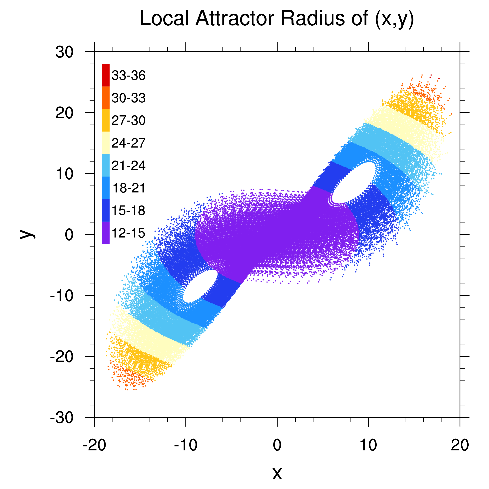

Research Scientist Department of Atmospheric and Oceanic Sciences Fudan University, Shanghai, China Email: fengjiefj@fudan.edu.cn
My doctoral research (advisor Dr. Jianping Li) developed a dynamically unstable perturbation method, i.e., the nonlinear local Lyapunov vectors (NLLVs), and extended their applications to the ensemble initialization.
After Ph.D., I earned high marks in the proposal submitted to National Research Council (NRC, U.S.) and was offered an NRC Research Associate. My post-doctoral research in collaboration with Dr. Zoltan Toth at Global System Division (GSD)/NOAA developed a statistical analysis and forecast error (SAFE) estimation method for the grid-point error estimation.
After that, I worked as a research fellow in Dr. Xuguang Wang's group at the University of Oklahoma. My main research involves the development of high-resolution DA system for tropical cyclone prediction. Some other research includes the development of the localized particle filters and the multi-scale localization scheme for ensemble-based data assimilation.
I am currently working as a research scientist at the Department of Atmospheric and Oceanic Sciences of Fudan University.
Major: Atmospheric Sciences
Major: Atmospheric Sciences
Feng and Wang (2019) MWR found that the assimilation of TCI dropsonde observations in TC upper-level outflow layer, despite being generally regarded as the exit of TC energy, plays a critical role in modulating the TC outflow and secondary circulation, and exerts an important impact on the TC intensity and structure prediction.
Schematic of the impacts (a) without and (b) with the assimilation of TCI dropsonde observations in upper levels on the hurricane structure and intensity.
Feng and Wang (2021) MWR demonstrated that improving the model resolution of either the first guess or background ensemble in DA can improve the TC analyzed intensity and structure but through distinct mechanisms.
(a) Difference (shaded) of 1000-hPa U wind analysis between FG(Lh)BE(Hh) and BASE overlaid by U analysis of BASE in the initial-hurricane case. (b),(c) The background ensemble correlation fields (contour) at the same level and the observational innovation.
Feng et al (2020) MWR compared two Non-Gaussian filters, the local particle filter (LPF) and the local nonlinear ensemble transform filter (LNETF). (1) Both methods preserve the posterior mean and variance of the Particle Filter. (2) LNETF shows more accurate posterior probability distribution but slightly worse spatial correlation of posteriors than LPF.
Feng et al (2014) JAS (2018) JAS developed the Nonlinear Local Lyapunov Vectors (NLLV) as an orthogonal extension of the classic Bred Vector (BV). Numerical experiments reveal that the NLLVs can span a higher-dimensional unstable subspace of local perturbations and better capture the spatial error growth than the BVs.
Animation of instability of 500-hPa geopotential height captured by NLLVs in a QG model
The Global and Local Attractor Radii (GAR and LAR) are introduced to measure the geometric properties of attractors. The quantitative relationships between GAR and LAR are calculated, and are found closely related to the chaotic error saturation behavior. GAR and LAR thus can provide objective criteria to measure the global and local predictability limits of atmospheric attractors (Li et al. 2018). The LAR can also be applied to the estimation of control and ensemble mean forecast errors (Feng et al. 2019).
Distribution of LAR on the x–y plane in the phase space of the Lorenz63 model
A Statistical Analysis and Forecast Error (SAFE) estimation method was developed and extended to the application of point-wise error estimation. The study is of critical importance to a reliable evaluation of the accuracy of analysis fields in data assimilation (DA) and the tuning of initial perturbation amplitude in ensemble forecasting. An initial evaluation in a moderately complex QG model manifests that the SAFE better estimates the distribution and amplitude of analysis error variance than the EnKF (Feng et al. 2017). The SAFE was further applied to estimating the analysis error variance of the NCEP operational DA system, providing a valuable reference for the DA system evaluation and advance (Feng et al. 2020).
Estimated total (black), growing (red circle) and decaying (blue) analysis error variances of the GFS at NCEP by SAFE-II, and the 6-hr perceived error variance (green) and the estimated analysis error variance (red cross) by SAFE-I, respectively.
2022 Feng, J., X. Qin*, C. Wu, P. Zhang, L. Yang, X. S. Shen, W. Han, Y. Z. Liu, 2022: Improving typhoon predictions by assimilating the retrieval of atmospheric temperature profiles from the FengYun-4A's Geostationary Interferometric Infrared Sounder (GIIRS). Atmospheric Research, 280, 106391, ISSN 0169-8095, https://doi.org/10.1016/j.atmosres.2022.106391. PDF
Liu, D., C. Huang, J. Feng*, 2022: Influence of Assimilating Wind Profiling Radar Observations in Distinct Dynamic Instability Regions on the Analysis and Forecast of an Extreme Rainstorm Event in Southern China. Remote Sens. 14, 3478. PDF
Hou, Z., J. Li, R. Ding, and J. Feng, 2022: Investigating decadal variations of the seasonal predictability limit of sea surface temperature in the tropical Pacific. Clim. Dyn. https://doi.org/10.1007/s00382-022-06179-3. PDF
Jankov, I.*, Z. Toth, and J. Feng, 2022: Initial-Value vs. Model-Induced Forecast Error: A New Perspective. Meteorology, 1(4), 377-393, https://doi.org/10.3390/meteorology1040024. PDF
2021 Zhang, J., J. Feng*, H. Li, Y. J. Zhu, X. F. Zhi, and F. Zhang, 2021: Unified ensemble mean forecasting of tropical cyclones based on the feature-oriented mean method. Wea. Forecasting, DOI: 10.1175/WAF-D-21-0062.1 PDF
Li, X., J. Feng, R. Q. Ding*, and J. P. Li, 2021: Application of Backward Nonlinear Local Lyapunov Exponent Method to Assessing the Relative Impacts of Initial Condition and Model Errors on Local Backward Predictability. Adv. Atmos. Sci., https://doi.org/10.1007/s00376-021-0434-2 PDF
Feng, J. and X. G. Wang*, 2021: Impact of increasing horizontal and vertical resolution of the hurricane WRF model on the analysis and prediction of Hurricane Patricia (2015). Mon. Wea. Rev., DOI: 10.1175/MWR-D-20-0144.1 PDF
2020 Feng, J. , J. Zhang*, Z. Toth, M. Pena, and S. Ravela, 2020: A New Measure of Ensemble Central Tendency. Wea. Forecasting, 35(3), 879–889. PDF
Feng, J. , X. G. Wang*, and J. Poterjoy, 2020: A comparison of two local moment matching nonlinear filters: local particle filter (LPF) and local nonlinear ensemble transform filter (LNETF). Mon. Wea. Rev., https://doi.org/10.1175/MWR-D-19-0368.1. PDF
Feng, J. *, Z. Toth, and M. Pena, 2020: Partition of Analysis and Forecast Error Variance into Growing and Decaying Components. Quart. J. Roy. Meteor. Soc., 146(728), 1302-1321. PDF
2019 Feng, J. and X. G. Wang*, 2019: Impact of assimilating upper-level dropsonde observations collected during the TCI field campaign on the prediction of intensity and structure of Hurricane Patricia (2015), Mon. Wea. Rev., 147, 3069–3089. PDF
Feng, J., J. P. Li*, J. Zhang, D. Q. Liu, and R. Q. Ding, 2019: The relationship between deterministic and ensemble mean forecast errors revealed by global and local attractor radii. Adv. Atmos. Sci., 36(3), 271–278. PDF
2018 Feng, J., R. Q. Ding, J. P. Li*, and Z. Toth, 2018: Comparison of nonlinear local Lyapunov vectors and bred vectors in estimating the spatial distribution of error growth. J. Atmos. Sci., 75, 1073–1087. PDF
Hou, Z., Li, J.*, Ding, R.*, Karamperidou, C., Duan, W., Liu, T., & Feng, J., 2018. Asymmetry of the predictability limit of the warm ENSO phase. Geophysical Research Letters, 45. PDF
Zhong, Q., L. Zhang, J. Li, R. Ding*, and J. Feng, 2018: Estimating the predictability limit of tropical cyclone tracks over the western North Pacific using observational data. Adv. Atmos. Sci., in press. PDF
Li, J. P.*, J. Feng, and R. Q. Ding 2018: Attractor Radius and Global Attractor Radius and their Application to the Quantification of Predictability Limits. Clim. Dyn., 51, 2359–2374, https://doi.org/10.1007/s00382-017-4017-y. PDF
Hou, Z., J. P. Li*, R. Q. Ding and J. Feng, 2018: The application of nonlinear local Lyapunov vectors to the Zebiak–Cane model and their performance in ensemble prediction. Clim. Dyn. PDF
2017 Feng, J.*, Z. Toth, and M. Peña, 2017: Spatial Extended Estimates of Analysis and Short-Range Forecast Error Variances. Tellus A, 69:1, 1325301. PDF
Huai, X., J. P. Li*, R. Q. Ding, J. Feng and D. Q. Liu, 2017: Quantifying local predictability of the Lorenz system using the nonlinear local Lyapunov exponent, Atmospheric and Oceanic Science Letters, 10:5, 372-378. PDF
2016 Feng, J., R. Q. Ding, J. P. Li* and D. Q. Liu, 2016: Comparison of nonlinear local Lyapunov vectors with bred vectors, random perturbations and ensemble transform Kalman filter strategies in a barotropic model. Adv. Atmos. Sci., 33(9), 1036–1046. PDF
Ding, R. Q., J. P. Li*, F. Zheng, J. Feng and D. Q. Liu, 2016: Estimating the limit of decadal-scale climate predictability using observational data. Clim. Dyn., 46(5), 1563–1580. PDF
2015 Liu, D. Q., J. Feng, J. P. Li* and J. C. Wang, 2015: The impacts of time-step size and spatial resolution on the prediction skill of the GRAPES-MESO forecast system. Chinese Journal of Atmos. Sci., 39(6), 1165–1178. PDF
Liu, D. Q., R. Q. Ding, J. P. Li* and J. Feng, 2015: Preliminary application of the nonlinear local Lyapunov exponent to target observation. Chinese Journal of Atmos. Sci., 39(2), 329−337. PDF
2014 Feng, J., R. Q. Ding, D. Q. Liu and J. P. Li*, 2014: The Application of Nonlinear Local Lyapunov Vectors to Ensemble Predictions in the Lorenz Systems. J. Atmos. Sci., 71, 3554–3567. PDF
2022.8.1-8.5, Co-convener of Session AS21 "Ensemble Modeling of High-impact, Multi-scale Weather to Decadal Phenomena" in the 19th Annual Meeting of Asia Oceania Geosciences Society (AOGS), online, https://www.asiaoceania.org/aogs2022/public.asp?page=sessions_and_conveners.asp.
2021.9, Editor of Special Issue "Remote Sensing for the Improvement of High-Impact Weather Analyses and Forecasts" of Journal Remote Sensing, https://www.mdpi.com/journal/remotesensing/special_issues/weather_analysis.
2021.7.9-7.11, Co-convener of Session 11 "Numerical Modeling and Data Assimilation" of the 7th Geoscience Forum for Youth, Guiyang, China. http://www.qndxlt.com/theme.html.
2020.7-present, Editorial board member of International Journal of Atmospheric and Oceanic Sciences.
2016-present, Member of American Meteorological Society (AMS).
2021-present, Member of European Geosciences Union (EGU).
Reviewer for Geoscientific Model Development, Journal of Geophysical Research, Advances in Atmospheric Sciences, Weather and Forecasting, Quarterly Journal of Royal Meteorological Society, Climate Dynamics, Atmosphere, Atmospheric Research, etc.
2021 3rd National Forum of Meso-scale Meteorology (oral), Jie Feng, "Impact of increasing horizontal and vertical resolution of the hurricane WRF model on the analysis and prediction of Hurricane Patricia (2015)", Nanjing, JiangSu, China. 21 Jan.
2nd Youth Forum of ENSO Dynamics and Prediction (invited oral), Jie Feng, "Attractor radius and its implication for prediction", Hangzhou, Zhejiang, China. 11 Oct.
2019 99th AMS annual meeting (oral), Jie Feng, A Comparison of Two Variants of Localized Particle Filter, Phoenix, AZ, USA. 7 Jan.
NCAR/DTC seminar (oral), Jie Feng, A New Measure of Ensemble Central Tendency, Boulder, CO, USA. 22 Aug.
NCEP/EMC seminar (oral), Jie Feng, A New Measure of Ensemble Central Tendency, College Park, MD, USA. 29 Jul.
2018 33rd Conference on Hurricanes and Tropical Meteorology (oral), Jie Feng, Impact of Assimilating Outflow Layer Dropsonde Observations Collected during the TCI Field Campaign on the Prediction of Intensity and Structure of Hurricane Patricia (2015), Ponte Vedra, FL, USA. 19 Apr.
2017 97th AMS annual meeting (oral), Jie Feng, A New Method to Estimate the Impact of Observing System Changes on Predictability, Seattle, WA, USA. 25 Jan.
97th AMS annual meeting (oral), Jie Feng, Assessment and Decomposition of Analysis and Forecast Error Variance into Growing and Decaying Components, Seattle, WA, USA. 26 Jan.
2016 7th EnKF Data Assimilation Workshop (oral), Jie Feng, Spatially Extended Estimates of Analysis and Short-Range Forecast Error Variances, State College, PA, USA. 23 May.
NCEP visit, EMC seminar, Jie Feng, Grid-point Estimates of Analysis and Short-Range Forecast Error Variances, Environmental Modeling Center, NOAA/NWS, College Park, MD, USA. 9 Feb.
Informal seminar, discussions (hosted by Prof. Kayo Ide), University of Maryland, College Park, MD, USA. 8 Feb.
GSD seminar, Jie Feng, Grid-point Estimates of Analysis and Short-Range Forecast Error Variances, Global Systems Division, NOAA/OAR/ESRL, Boulder, CO, USA. 4 Feb.
96th AMS annual meeting (oral), Jie Feng, Grid-point Estimates of Analysis and Short-Range Forecast Error Variances, New Orleans, LA, USA. 13 Jan.
2015 GSD seminar, Jie Feng, Nonlinear Local Lyapunov Vectors and Their Use in Ensemble Forecasting, Global Systems Division, NOAA/OAR/ESRL, Boulder, CO, USA. 8 Oct.